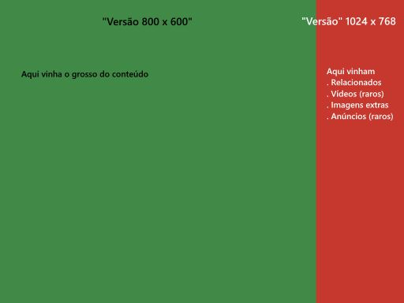

História
As primeiras soluções apresentadas para a criação de sites que se adaptavam a diferentes resoluções foram:
- Desnecessário: Como as primeiras páginas apenas continham texto nenhum ajuste era necessário para que elas fossem responsivas, layouts de 1 coluna sem imagens são naturalmente responsivos ... O simples é belo ...
- Nenhuma: Não havia adaptação do usuário, ele que lesse o "melhor vizualisado utilizando-se o Internter Explorer e a resolução 800 x 600"
- Duas versões: havia 2 urls, uma para a versão 800 x 600 e outra para a versão 1024 x 768, com - potencialmente - o mesmo conteúdo, e isso se repetia para o site todo.
-
2 versões em 1 :uma área de 800 x 600, mas o site tinha
1024 x 768, com rolagem horizontal
 -
<table border="0">Tabelas aninhadas eram utilizadas
para criar o layout do site, tendo geralmente width de 100% e border
igual a 0, pois antes do HTML 5 o padrão das tabelas era terem bordas.
Essa metodologia aumenta MUITO (tamanho do arquivo) e dificulta MUITO a manutenção do layout. Sem contar que a página fica sem semântica nenhuma.
-
Várias folhas de estilo: utilizando o atributo media
do <link> para aplicar diferentes folhas de estilo em diferentes
resoluções.
<link rel="stylesheet" href="css/index-800-600.css" media="screen and (width: 800px)" /> <link rel="stylesheet" href="css/index-1024-768.css" media="screen and (width: 1024px)" />
- Uma técnica semelhante também era utilizada também para fazer consertos exclusivos para o Internet Explorer.
- Design adaptativo: O uso de Javascript ou redirecionamentos no servidor para levar o leitor para diferentes versões do site de forma transparente. Ex: uma versão desktop e outra mobile (ou ainda uma versão tablet). Sendo que cada uma dessas versões é um site inteiro, e em geral o uusário não consegue entrar na versão "errada".
<!--[if IE]>
<link rel="stylesheet" href="ie.css" type="text/css" />
<script src="ie.js"></script>
<![endif]-->